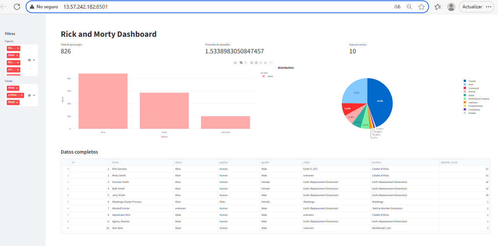

Código Python
import pandas as pd
import streamlit as st
import plotly.express as px
import matplotlib.pyplot as plt
st.set_page_config(page_title="Rick and Morty Dashboard", layout="wide")
@st.cache_data
def load_data():
return pd.read_csv("r_m.csv")
df = load_data()
st.title("Rick and Morty Dashboard")
st.sidebar.header("Filtros")
species_filter = st.sidebar.multiselect("Especie", options=df['species'].unique(), default=df['species'].unique())
status_filter = st.sidebar.multiselect("Estado", options=df['status'].unique(), default=df['status'].unique())
filtered_df = df[(df['species'].isin(species_filter)) & (df['status'].isin(status_filter))]
# KPI
total_characters = len(df)
avg_episodes = filtered_df["episode_count"].mean()
unique_species = filtered_df["species"].nunique()
col1, col2, col3 = st.columns(3)
col1.metric("Total de personajes", total_characters)
col2.metric("Promedio de episodios", avg_episodes)
col3.metric("Especies únicas", unique_species)
col1, col2 = st.columns(2)
with col1:
status_count = df["status"].value_counts()
plt.figure(figsize=(6,4))
fig1 = px.bar(
status_count,
color_discrete_map={"alive":"green", "dead":"red", "unknow":"gray"}
)
st.plotly_chart(fig1,use_container_width=True)
with col2:
fig2 = px.pie(filtered_df, names="species", title="distribution")
st.plotly_chart(fig2, use_container_width=True)
st.subheader("Datos completos")
st.dataframe(df.head(20), use_container_width=True)
Ver código completo en GitHub
Captura del Dashboard
